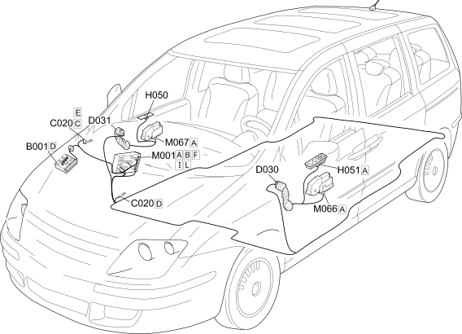

E3050 FRONT ELECTRIC WINDOWS COMPONENT LOCATION
- Path
- Electrical equipment > 1 ELECTRICAL FUNCTIONS > E30 ELECTRICALLY ACTIVATED DEVICES > E3050 ELECTRIC FRONT WINDOWS > E3050 FRONT ELECTRIC WINDOWS COMPONENT LOCATION
- Kind
- topic
- Applies to
- engines: 2.0 16V JTD, 2.2 16V JTD; all production periods; only with equipment: MY 2005
- Interactive page
- https://sloeber94.github.io/elrnDB-fUlss/en/#/179008980
Applies to: engines: 2.0 16V JTD, 2.2 16V JTD; all production periods; only with equipment: MY 2005

Component code | Description | Reference to the assembly |
|---|---|---|
ENGINE COMPARTMENT JUNCTION UNIT | ||
PASSENGER SIDE DASHBOARD EARTH | - | |
DRIVER'S FRONT DOOR COUPLING | - | |
PASSENGER FRONT DOOR COUPLING | - | |
ELECTRIC WINDOW SWITCH ON FRONT PASSENGER DOOR | ||
ELECTRIC WINDOW AND REAR VIEW MIRROR CONTROLS ON DRIVER'S FRONT DOOR | ||
BODY COMPUTER | ||
DRIVER'S DOOR CONTROL UNIT (NPG) | ||
PASSENGER DOOR CONTROL UNIT (NPP) | - |
Topics linked from this page (11)
- 5505A MULTI-FUNCTION COMPONENTS
- 7005M FRONT ELECTRIC WINDOWS
- B001 ENGINE COMPARTMENT JUNCTION UNIT
- C020 PASSENGER SIDE DASHBOARD EARTH
- D030 DRIVER'S FRONT DOOR COUPLING
- D031 PASSENGER FRONT DOOR COUPLING
- H050 ELECTRIC WINDOW SWITCH ON FRONT PASSENGER DOOR
- H051 ELECTRIC WINDOW AND REAR VIEW MIRROR CONTROLS ON DRIVER'S FRONT DOOR
- M001 BODY COMPUTER
- M066 DRIVER'S DOOR CONTROL UNIT (NPG)
- M067 PASSENGER DOOR CONTROL UNIT (NPP)